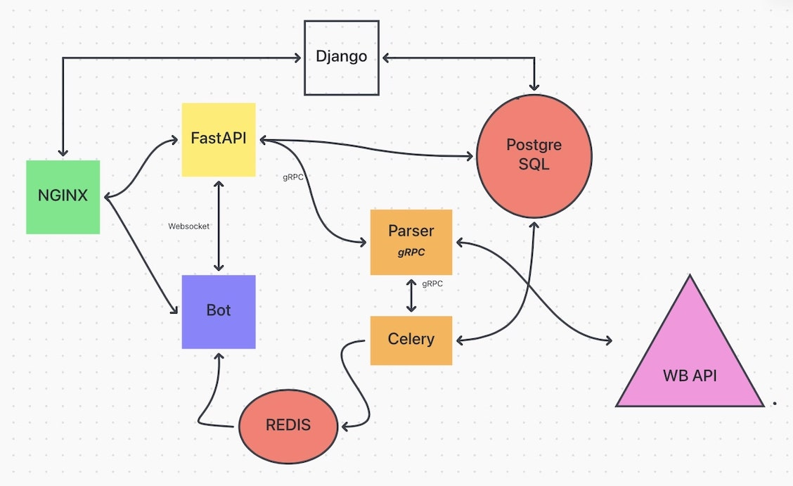

Особенности реализации:
- Контейнеризация:
- Безопасность: Секретные данные хранятся в файле
.env, что обеспечивает защиту конфиденциальной информации. - Взаимодействие с API: Бот интегрирован с внешним API Wildberries для получения актуальной информации о товарах.
- Документация: Автоматически генерируется сайт с документацией с помощью MkDocs, что облегчает понимание и использование проекта.
Реализация архитектуры:
- Административная панель: Развернута админка на Django для редактирования моделей и управления данными.
- Проксирование запросов: Nginx проксирует запросы к базе данных PostgreSQL, обеспечивая высокую производительность.
-
Alembic используется для управления миграциями базы данных.
- Фоновая обработка: Redis работает с Celery для хранения задач, а Celery отправляет уведомления боту через очередь Redis, когда необходимо уведомить пользователя.
- Интерфейс взаимодействия: Бот служит интерфейсом к приложению FastAPI и может выполнять операции с данными по запросу.
- Связь через вебсокеты: Связь между ботом и FastAPI реализована через вебсокеты для обеспечения мгновенной передачи данных.
FastAPI также использует gRPC сервер для парсинга данных, что позволяет эффективно обрабатывать запросы. Управление данными осуществляется через RESTful эндпоинты, включая возможность добавления, получения и удаления записей.
Схема
